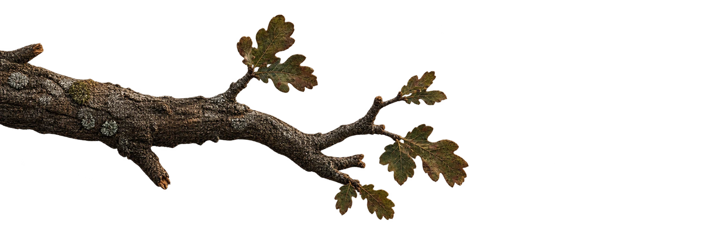

Khi mô hình đọc lại câu trả lời cùng ngữ cảnh, phân bố chú ý của nó lên từng đoạn đủ để phân biệt trung thực, ảo giác nội tại, ảo giác ngoại lai — không LLM giám khảo, không tinh chỉnh, bộ phân loại 579 tham số.
Hệ RAG truy xuất tài liệu rồi để mô hình viết. Ba chuyện có thể xảy ra. Rê chuột lên từng thẻ — cú Lens sẽ cho biết nó nghĩ gì. Ba ví dụ này được chấm thật trên T4, không ai dàn dựng.
Ngữ cảnh chung của ba thẻ: Hà Nội là thủ đô của Việt Nam, nằm bên bờ sông Hồng. Thành phố có lịch sử hơn một nghìn năm, từng mang tên Thăng Long dưới triều Lý…
Không sinh token mới. Một lượt đọc duy nhất (teacher forcing), và ma trận chú ý được cộng dồn ngay trong từng lớp rồi giải phóng — nhờ đó ngữ cảnh 4.096 token vừa trong 16 GB của một card T4.
Ngữ cảnh + câu hỏi ở lượt user, câu trả lời cần chấm ở lượt assistant. Mẫu chốt một lần, không đổi.
Qwen2.5-7B lượng tử hóa 4-bit, float16, bỏ lớp 27 vì tràn số. 437 ms một mẫu.
Mỗi lớp, mỗi đầu: cộng phần chú ý của token phản hồi rơi vào từng đoạn ngữ cảnh, rồi xóa ma trận.
Tỷ lệ gộp (Lookback Lens) + entropy, tỷ trọng lớn nhất, Gini, khoảng cách top-1/top-2, độ trôi.
579 tham số, khớp trong vài giây trên CPU. Ba lớp: trung thực, nội tại, ngoại lai. Trả cả điểm rủi ro.
Lookback Lens gộp cả ngữ cảnh thành một con số. Tách theo đoạn thì có thêm hình dạng của phân bố — và đầu ra chỉ được đoạn nào. Kéo thanh trượt để thấy hai cách nhìn khác nhau ra sao (minh họa, không phải số đo).
Tỷ lệ chú ý rơi vào ngữ cảnh so với phần đã sinh. Phân bố nhọn hay tản đều cho cùng một số.
| Phương pháp (ViHallu, test 700) | macro-F1 | ms/mẫu | Tham số huấn luyện | Cần gì |
|---|---|---|---|---|
| Baseline bề mặt (độ dài, trùng lặp từ) | 0,656 | 0,001 | 9 | CPU |
| Gemini giám khảo (300 mẫu) | 0,664 | 8.194 | 0 | API ngoài, dữ liệu rời máy |
| PhoBERT-large tinh chỉnh | 0,749 | 12,3 | 369 triệu | GPU + tinh chỉnh |
| XLM-R-large tinh chỉnh | 0,776 | 25,2 | 560 triệu | GPU + tinh chỉnh |
| Lookback gộp, Qwen2.5-7B | 0,745 | 437,6 | 2.271 | GPU, lượt đọc có sẵn |
| Chunk-aware, Qwen2.5-7B | 0,757 | 437,6 | 579 | GPU, lượt đọc có sẵn |
| Lookback gộp, Qwen2.5-3B | 0,735 | 222,7 | 195 | GPU, lượt đọc có sẵn |
Khoảng tin cậy 95 % của mọi dòng rộng khoảng 0,065 — XLM-R và chunk-aware chồng nhau. Bảng đầy đủ, kèm khoảng tin cậy, ở docs/EXPERIMENTS.md.
Năm phép đo độc lập — thêm đặc trưng bề mặt, đổi họ mô hình, đổi cỡ mô hình, đổi bộ dữ liệu, chuyển chéo bộ — cùng nói: năm đại lượng hình dạng mang tín hiệu thật, nhưng là cùng một tín hiệu tỷ lệ gộp đã mang, đo được ở mức 99,9 % chồng lấn trên ngữ cảnh 22,6 đoạn.
float16 không sinh được câu trả lời — lớp 27 tràn số. Lập luận "chi phí biên gần 0" chỉ đúng trên phần cứng có bfloat16 gốc.from vihallulens import HallucinationDetector
det = HallucinationDetector.from_pretrained(
"models/e03_chunk_aware.pkl")
r = det.score(context, question, response)
r.label, r.risk_score, r.chunk_attentionBundle mang cả công thức dựng cột — 32 đầu chú ý đã chọn, lưới lớp — và từ chối bản ghi trích trên lưới khác.
python scripts/serve.py --port 8000
POST /score {context, question, response}
POST /score/batch {items: [...]} # ≤ 64
POST /demo/ask {question}
GET /health loading | ok | errorMô hình nạp trong luồng nền; /health báo đúng trạng thái. Gửi cách chia đoạn khác cách đã khớp → 400, không lặng lẽ bỏ qua.
docker compose up --build
# ảnh 10,5 GB, trọng số 15 GB tải vào volume
# GET /health → ok khi mô hình đã nạpCần GPU NVIDIA. Không có GPU thì báo lỗi sau 6 giây thay vì tải 15 GB rồi mới hỏng.